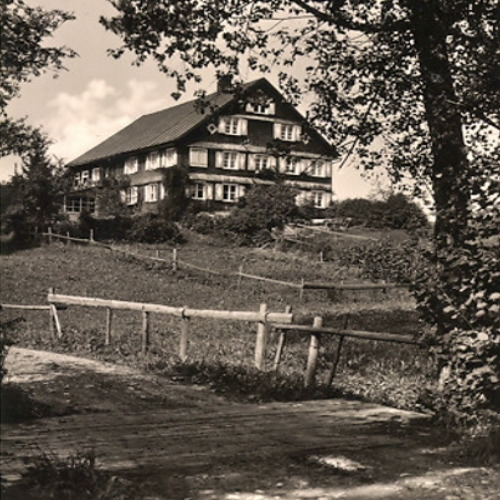

>
>


Neyer Gertrud - marr. Bihler (1765 - 1844)
Kalzhofen


 Ref. No. 2098
Ref. No. 2098
1 step back
Index by Surnames
Index by profession
Index by years
Index by location
guided Tours
Structure
Predecessors
Geography
Slide show
Documents
Family pictures
Wechsle zu Deutsch
Play / Stop
Play / Stop
Bihler Gertrud was born in the zodiac sign of Scorpio on a Thursday, the 24.10.1765 in Kalzhofen as daughter of
- Neyer Josef, born in 1725, a_farmer from Kalzhofen
- and Burger(in) Anna Maria, born in 1728, a_house wife of Oberstaufen
She married at the age of 37 years on a Thursday, the 25.10.1802 in Oberstaufen Bihler Josef -, 13 years younger -, a_farmer, born in 1778 from Kalzhofen. She was a_house wife and the couple lived in Kalzhofen. 6 years later had their son Johann, born in 1809.
She died at the age of 78 years on a Tuesday, the 07.05.1844 in Kalzhofen 6 months earlier than her husband. Mourning were amongst others her husband Josef, her son Johann, her daughter in law Agatha.
She lived in the epoch of Classicism and as a young girl under the reign of the Emperess Maria Theresia of Habsburg-Lothringen. Some of her contemporaries of a similar age are Maria Antoinette and Madame Tussaud. During her life there were many wars, amongst them Napoleon's wars, the Coalition wars and Napoleon's war on the Iberic Peninsula. Amongst important discoveries and inventions during her time are the Homoeopathy, the mouth organ and the raw material for the paper production.